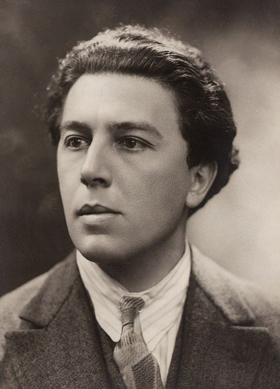
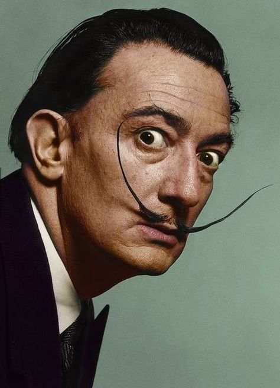
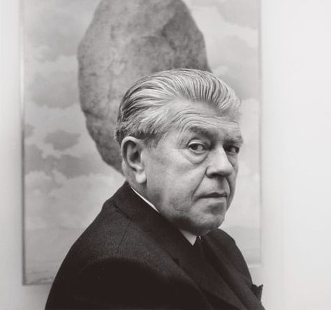

André Breton (1896-1966)
Fue un escritor, poeta y crítico francés, considerado el fundador principal teórico del surrealismo. Promovió la exploración del subconsciente y la liberación del pensamiento creativo a través de obras como "Los campos magnéticos" y "El manifiesto surrealista".
Salvador Dalí (1904-1989)
Fue un pintor surrealista español reconocido por sus obras icónicas como "La persistencia de la memoria" y "La tentación de San Antonio". Exploró los sueños, la sexualidad y lo subconsciente a través de su arte.
René Magritte (1898-1967)
Fue un pintor surrealista conocido por desafiar la percepción y la realidad en sus imágenes. Su estilo distintivo incluía objetos cotidianos en contextos inusuales, como en "La traición de las imágenes" y "El hijo del hombre".